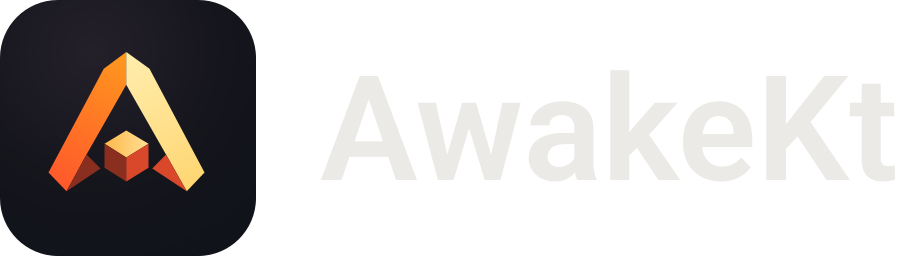
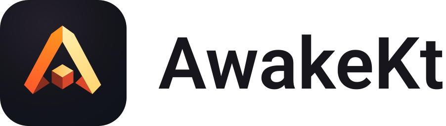
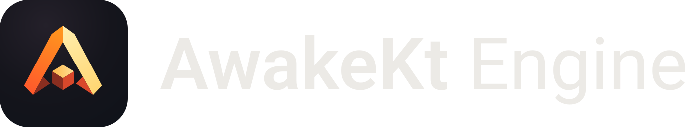
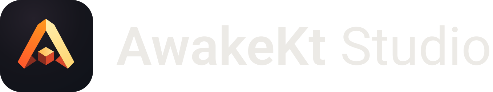
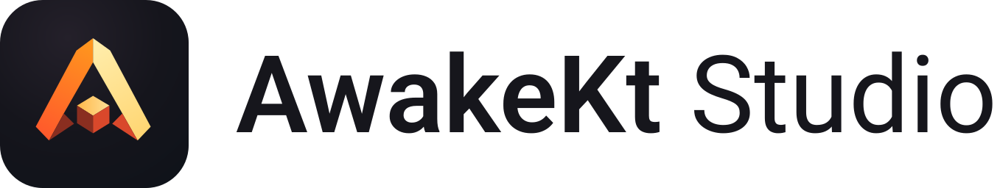

Brand guidelines
The Ember Signal mark and the AwakeKt names, with the files to use them. One mark covers AwakeKt Engine and AwakeKt Studio; the product name tells them apart.
The mark

A geometric A and cube in ember orange and warm gold, always on its dark field. Use it alone at icon sizes: favicons, launchers, the Dock and taskbar.

Name lockups
The mark beside its name, for headers, slides and store listings. The mark keeps its dark field on every surface; only the name changes colour. Text is outlined, so the files look the same in any tool.











Colours
The mark's own colours. On light pages, gold text uses the darker #9A6500 for contrast; the mark itself never changes.
Usage
Do
- Use the mark alone at icon sizes, and a lockup where there's room for a name.
- Pick the lockup for the surface: on-dark for dark backgrounds, on-light for light ones.
- Keep clear space around a lockup at least a quarter of the mark's height.
- Keep lockups at least 20 px tall and the mark alone at least 16 px.
- Write the names as AwakeKt, AwakeKt Engine and AwakeKt Studio.
Don't
- Recolour the mark, for a product, a light theme or a campaign.
- Remove the dark field or place the bare A on a light background.
- Redraw the name in another typeface, stretch it, or add a slogan to the lockup.
- Put a name inside an app icon or favicon.
- Use the mark for a product or project that isn't AwakeKt.
You may use the names and the unmodified mark to identify AwakeKt, describe an integration, or link to the project, without implying endorsement. Using them as the identity of your own product, service, domain or social profile needs permission; see TRADEMARKS.md.
App icons
| Platform | How the mark is used |
|---|---|
| Android | Adaptive icon: the dark field as the background layer, the mark scaled to sit inside the 66 dp safe zone as the foreground, and a monochrome layer for themed icons. |
| iOS | The full-bleed 1024 px PNG; the system applies the corner mask. |
| Desktop | The 1024 px PNG for the Dock and taskbar. On macOS, the rounded-square icon grid with a transparent margin. |
| Web | The SVG master as the favicon. |